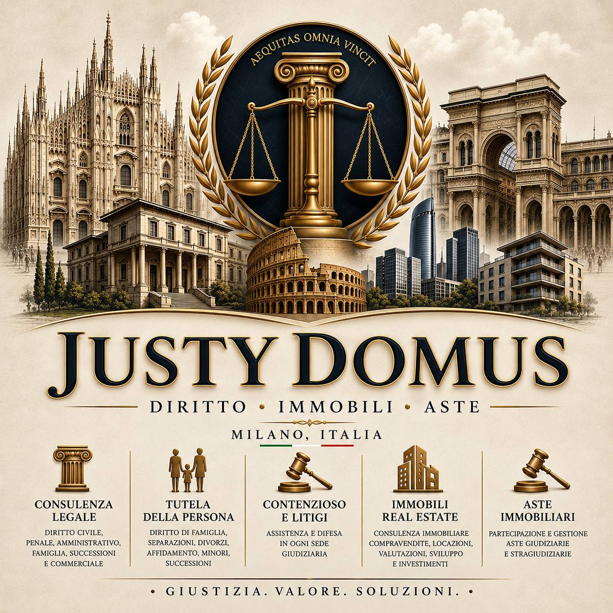

Justy Domus
DIRITTO • IMMOBILI • ASTE
MILANO, ITALIA
Consulenza Legale
Diritto Civile, Penale, Amministrativo, Famiglia, Successioni e Commerciale.
Tutela Della Persona
Diritto di Famiglia, Separazioni, Divorzi, Affidamento, Minori.
Contenzioso e Litigi
Assistenza e difesa in ogni sede giudiziaria.
Immobili Real Estate
Consulenza immobiliare, compravendite, locazioni e investimenti.
Aste Immobiliari
Partecipazione e gestione aste giudiziarie e stragiudiziarie.